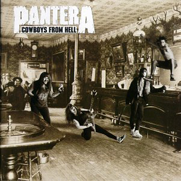
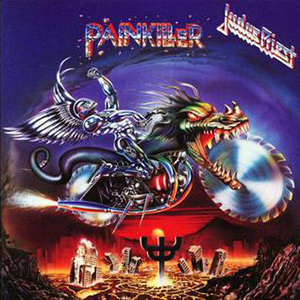
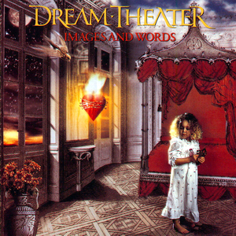
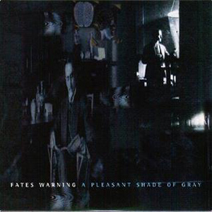
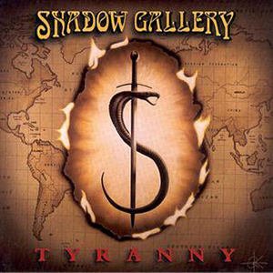

Classic albums from the 90s
Pantera
Cowboys From Hell

- Release date: 24 July 1990
- Genre: Thrash Metal
- Read more on Wikipedia
Judas Priest
Painkiller

- Release date: 3 September 1990
- Genre: Heavy Metal
- Read more on Wikipedia
Dream Theater
Images and Words

- Release date: 7 July 1992
- Genre: Progressive Metal
- Read more on Wikipedia
Fates Warning
A Pleasant Shade of Gray

- Release date: 22 April 1997
- Genre: Progressive Metal
- Read more on Wikipedia
Theatre of Tragedy
Aegis
- Release date: 18 August 1998
- Genre: Gothic Metal
- Read more on Wikipedia
Shadow Gallery
Tyranny

- Release date: 22 September 1998
- Genre: Progressive Metal
- Read more on Wikipedia